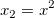

FAQ-257 Wie kann ich eine Regression mit mehreren linearen Termen durchführen und eine analytische Lösung erhalten?
Multiple-Linear-Regression
Letztes Update: 04.02.2015
Sie können die analytische Lösung einer Gleichung erhalten, wenn die Gleichung mehrere lineare Terme enthält. Anstatt das Hilfsmittel NLFit für eine iterative Lösung zu verwenden, können Sie die linearen Terme als unterschiedliche unabhängige Variable (wie  etc.) behandeln und das Hilfsmittel Multiple lineare Regression verwenden, um die analytische Lösung zu erhalten. Der Schlüssel ist das Erstellen mehrerer neuer Spalten in dem Arbeitsblatt und ihr Füllen mit Daten entsprechend den linearen Termen der Funktion. Dann wird die multiple lineare Regression für die neuen Daten durchgeführt.
etc.) behandeln und das Hilfsmittel Multiple lineare Regression verwenden, um die analytische Lösung zu erhalten. Der Schlüssel ist das Erstellen mehrerer neuer Spalten in dem Arbeitsblatt und ihr Füllen mit Daten entsprechend den linearen Termen der Funktion. Dann wird die multiple lineare Regression für die neuen Daten durchgeführt.
Angenommen, Sie suchen die analytische Lösung zu der folgenden Funktion:

Die Funktion kann folgendermaßen aussehen:

wobei  und .
Wir müssen zwei neue Spalten hinzufügen und sie jeweils mit Daten entsprechend der beiden Terme  und füllen. Dann sollte die Regression mit mehreren linearen Termen durchgeführt werden, um eine analytische Lösung zu erhalten. Die einzelnen Schritte werden im Folgenden beschrieben:
und füllen. Dann sollte die Regression mit mehreren linearen Termen durchgeführt werden, um eine analytische Lösung zu erhalten. Die einzelnen Schritte werden im Folgenden beschrieben:
- Öffnen Sie eine neue Arbeitsmappe und importieren Sie die Datei \Samples\Curve Fitting\ Exponential Growth.dat.
- Markieren Sie Spalte B und klicken Sie mit der rechten Maustaste darauf. Wählen Sie zweimal Zellen einfügen, um zwei Spalten vor der Spalte B einzufügen.
- Jetzt wird die Zuweisung der neuen Spalten auf X gesetzt. Markieren Sie sie. Klicken Sie mit der rechten Maustaste auf sie und wählen Sie dann Setzen als: X im Kontextmenü.
- Markieren Sie die zweite Spalte und klicken Sie mit der rechten Maustaste darauf. Wählen Sie Spaltenwerte errechnen im Kontextmenü. Geben Sie im Dialog Werte setzen col(A)^2 als die Formel ein. Klicken Sie auf Anwenden, um mit Daten zu füllen.
- Schließen Sie den Dialog Werte setzen nicht. Klicken Sie auf die Kopfzeile der 3. Spalte. So können Sie Werte für diese Spalte setzen. Geben Sie dieses Mal exp(col(A)) als Formel ein. Klicken Sie auf OK.
- Markieren Sie alle Spalten und wählen Sie Analyse: Anpassen: Mehrfache Lineare Regression, um den Dialog Multiple Regression zu öffnen. Aktivieren Sie in der Gruppe Fit-Optionen das Kontrollkästchen Fester Schnittpunkt mit der Y-Achse und stellen Sie sicher, dass die Zahl im Bearbeitungsfeld Fester Schnittpunkt mit der Y-Achse bei 0 ist. Klicken Sie dann auf OK, um die Anpassung fertig zu stellen.
- Die Anpassungsergebnisse sollten folgendermaßen aussehen:
- Sie zeigen, dass Parameter a = -0,08256, b = 0,18566, c = 1,18432.
Stichwörter:Regression, Anpassung, multiple lineare Regression, analytische Lösung, iterative Lösung